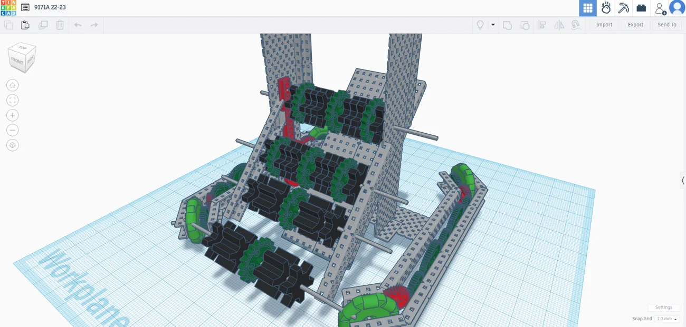
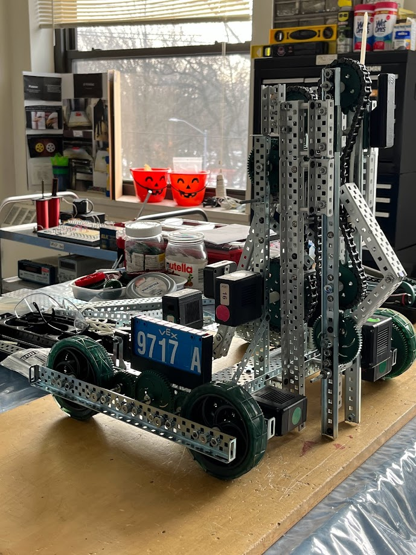
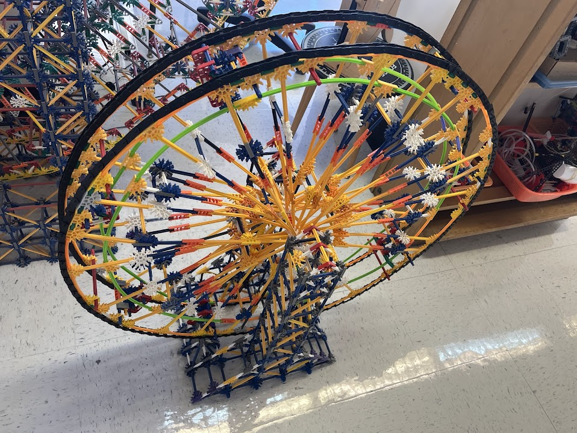
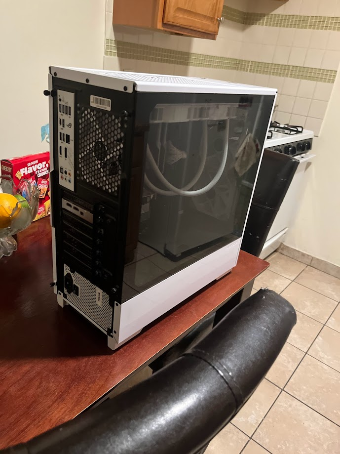
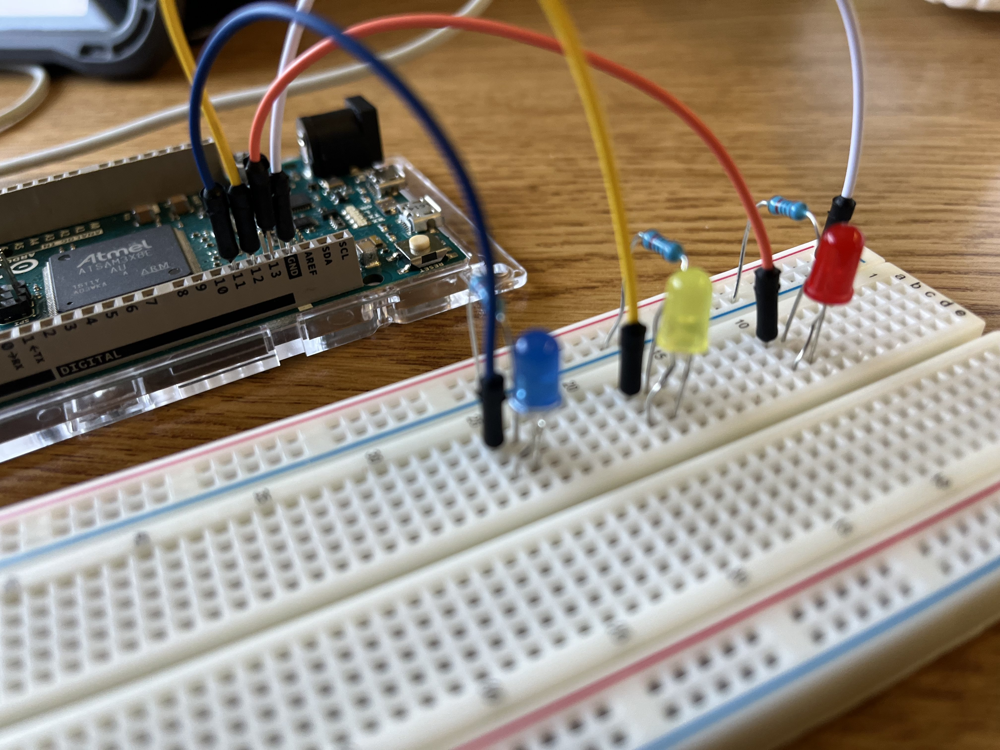
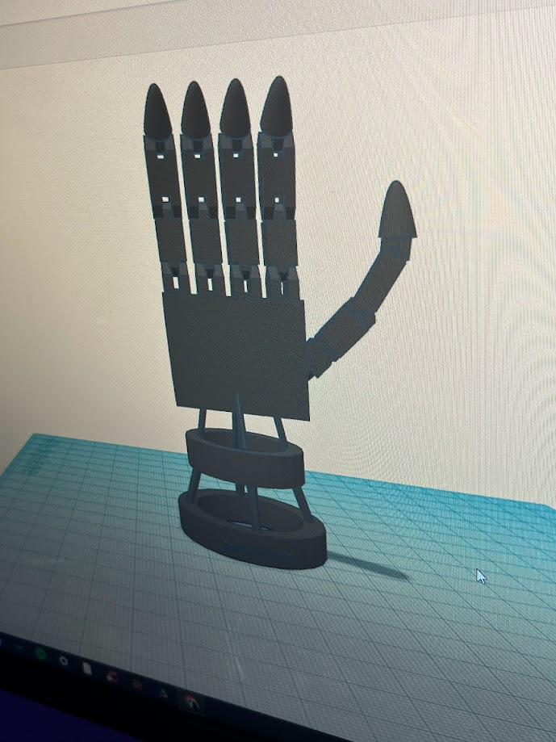
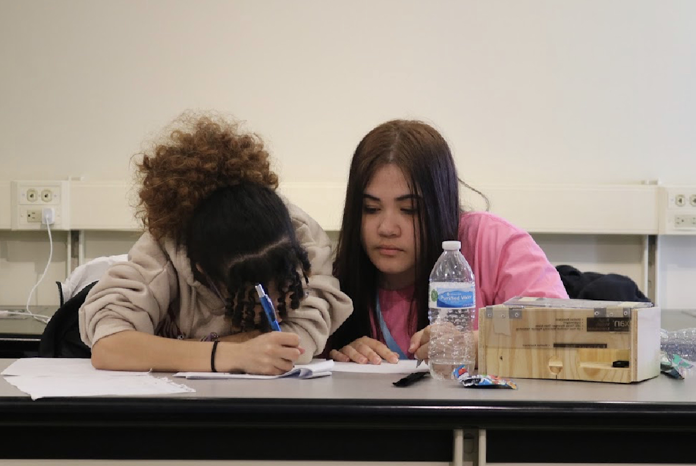

Slightly
Dangerous LLC C++17
Dangerous LLC C++17
Slightly Dangerous LLC
A C++ console game with generated mazes, inventory and loot systems, minigames, lore, and three distinct workdays.
Open project →Current projects, coursework, robotics, and earlier builds.
A C++ console game with generated mazes, inventory and loot systems, minigames, lore, and three distinct workdays.
Open project →AVR/C++ work on the Arduino Mega 2560, including direct register control, assembly timing loops, serial input, and Morse-code LED output.
More lab photos and writeups will be added as the course continues.
Team 9717A · mechanical design, CAD, building, testing, and leadership across three competition seasons.

I worked on mechanical design and CAD, balancing robot performance, reliability, packaging, and the constraints of competition.
Competition footage and build work from my time on the team, including the season where our robot earned a design award.
A few pieces from the larger archive.






The full archive keeps the older photos, videos, journals, CAD work, outreach, sports, martial arts, and other projects from the original site.